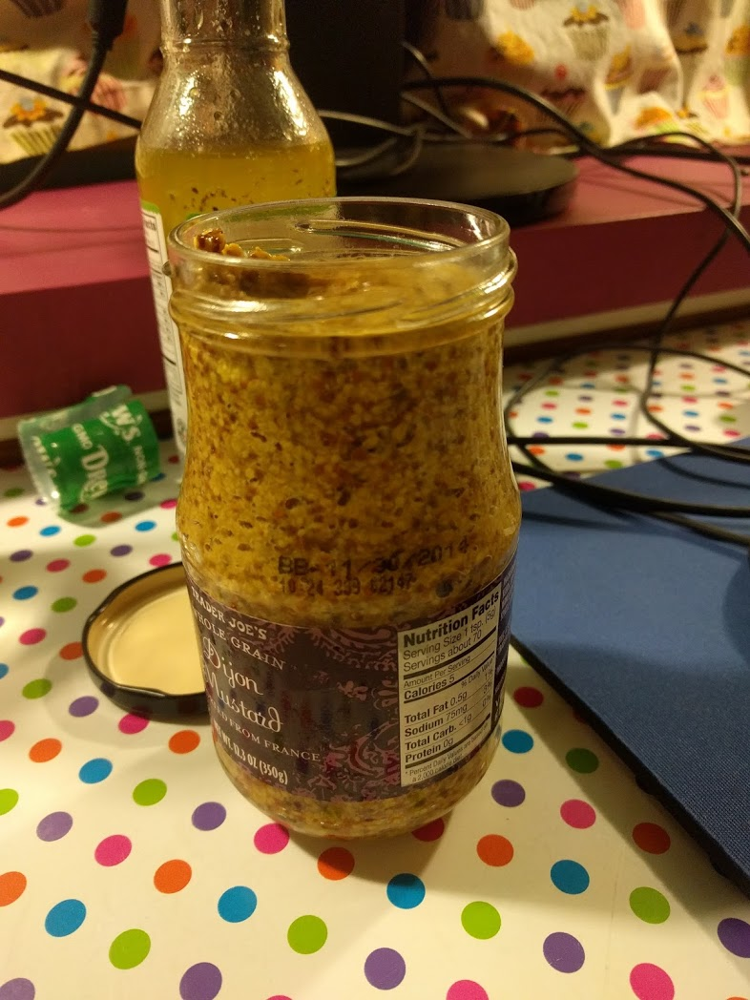

Home
Diminutives
Mustard
January 29, 2017
This story starts in 2010.
I moved to Ithaca to spend the summer with my girlfriend.
I discovered the grocery store Wegmans,
and it totally knocked my socks off.
Among other things, they have a really solid generic brand.
That is, everything sold under the 'Wegmans' label is good.
And not just a little good, but *very* good.
Anyway, I fell hard for their mustard.
It's whole grain—and I loved it more than life.
(I hate hate hate hate classic yellow mustard.)
This mustard was the best, and it was cheap.
At the end of the summer, I moved to New York City
and knew I'd be without Wegmans for a while.
I still remember it—going to the market one last time
and putting ~8 jars of mustard in the cart.
My girlfriend said No way. Mustard goes bad, and I was getting way too much.
We looked at the expiration date.
November 2014. 4 years away.
I'm doing it, I said. I need all this mustard.
I left New York 5 years later.
I sold most of my stuff,
and spent the better part of year traveling around the U.S.
I still had two jars of mustard left—so I took them with me.
I cooked saugage tonight and opened the last jar.
The glass says it was at its best up until 3 years ago.
But I can confirm—still good.
I was wrong about how fast I'd go through it.
But there has not been one single day since the summer of 2010
where I opened the fridge and said, "Shit. Looks like I'm out of mustard."
For 7 years, I've never had to worry.
It's been a good run. But soon enough, I'll be out.
